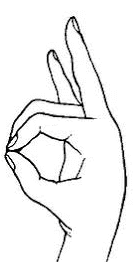
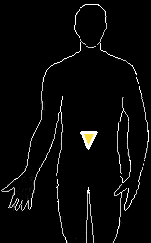

Please note: The hand positions are unnecessary and are an option. Just skip the hand position if this is in any way difficult for you. The vibration is the key here and you should be relaxed. Trying to force your hands into the mudra is a distraction. Mudras should be comfortable.
|  | 1. Sit in a comfortable position with your spine straight.
2. Relax and go into a meditative state. 3. Place your hands in the solar mudra illustrated at left. [This step is optional] 4. Inhale fully and drop your chin to your chest. Keep your chin gently, but firmly pressed against your chest throughout the entire exhale, only raising your head during the inhale. |
|  | 5. Vibrate "RAUM"
R-R-R-R-AH-AH-AH-AH-AH-U-U-U-U-M-M-M-M until you are out of breath, concentrating on your solar plexus chakra. Adjust the vibration of the chant so you can feel it in your solar plexus chakra. DO NOT ROLL THE R HERE 6. Repeat 5 times. 7. Now, align your solar chakra point facing down as illustrated at left, by visualizing it. The color of the solar chakra is bright gold. |
BACK TO MAIN POWER MEDITATION PAGE
© Copyright 2005, 2007, 2016, Joy of Satan Ministries;
Library of Congress Number: 12-16457